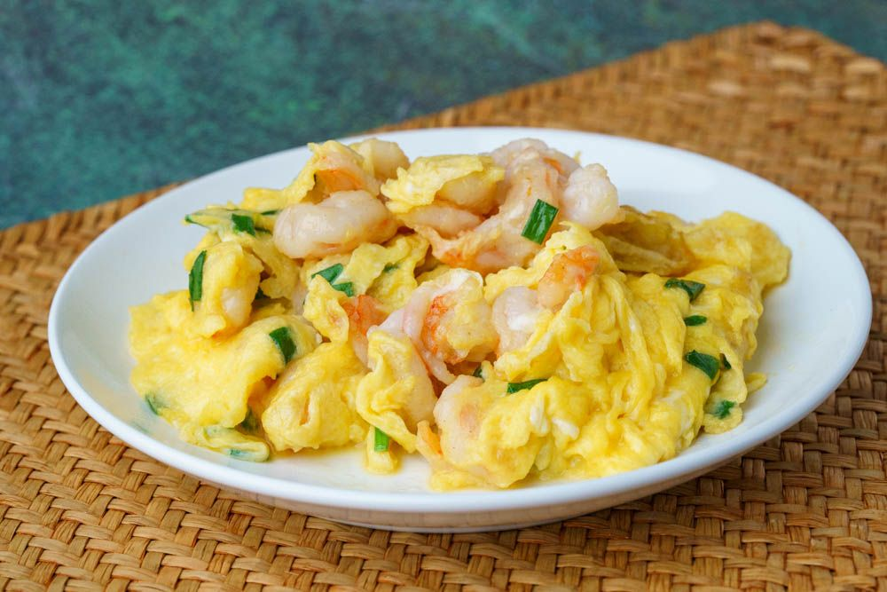

Cantonese Scambled Eggs & Shrimp

Whip up these silky-smooth homestyle Cantonese eggs in 15 minutes!
Are you scrambling last minute for just one more side dish? Look no further! This dish is quick, delicious, and only uses a few ingredients that you probably already have in the fridge
and pantry! It's the perfect representation of humble Cantonese home cooking.
It's quick but inaccurate to compare these with European-style scrambled eggs. Scrambled eggs often get their fluffiness from added ingredients like milk or water, and they're generally
cooked by quickly stirring the beaten eggs on low to medium heat, creating curds of eggs with a rather homogeneous color and texture throughout.
Ingredients
Main Ingredients
- 5 oz shrimp
- 5 eggs
- 1 small amount of green onion
- 2 tbsp oil
Seasoning: Shrimp
- 0.50 tsp salt
- 0.50 tsp white pepper
- 1 tsp cornstarch
Seasoning: Eggs
- 1 tsp oil
- 0.50 tsp salt
- 0.50 tsp sugar
Instructions
Peel & Cut Shrimp
- Peel the shrimp (5 oz) by pulling off the shell at the third section, right before the tail. Then, hook a finger underneath to peel off the rest of the shell.
- Put the peeled shrimp in a bowl of water, and wash them clean of any debris. While you're rinsing the shrimp, you can also pull out the vein if you like.
- Pour the water out, and gently squeeze to get more water out. Layer the shrimp between paper towels and blot dry further.
- Once dry, marinate the shrimp with salt (0.50 tsp) and white pepper (0.50 tsp). Mix that together, and then add cornstarch (1 tsp).
Prepare green onion & eggs
- Chop the green onion (1 small amount) into small pieces, but keep it separate from the eggs for now. Crack the eggs (5 ) into a bowl, and add oil (1 tsp), salt (0.50 tsp), and sugar (0.50 tsp).
- When you're ready to cook, beat the eggs thoroughly, until the mixture is homogeneous with large air bubbles. Then, mix in the chopped green onion.
Stir-fry shrimp
- Turn the stove to the highest heat, and let the wok heat up for a minute. Add oil (1 tbsp), give it a swirl to coat the wok, and add the shrimp. Cook for about 30 seconds, until they are about
80-90% cooked and have almost turned entirely orange.
- Turn the heat off and scoop the cooked shrimp out of the wok and into the bowl of beaten eggs.
Stir-fry everything
- Turn the stove back on high heat and add the rest of the oil (1 tbsp). When the wok is hot, pour all of the egg mixture in.
- The bottom of the egg will bubble up immediately, but let it sit for about 10 seconds, and then start to move it around. Use the spatula to get under the cooked layer of egg, and fold it over
so that the next wave of uncooked egg mixture can flow underneath.
- Continue to let each layer cook, stacking each cooked layer on top, for about 30 seconds. Turn the heat off, and continue cooking and stacking using the residual heat.
Plate & serve
- As soon as the eggs are cooked to your liking, take them out of the wok and onto the serving plate. Enjoy!